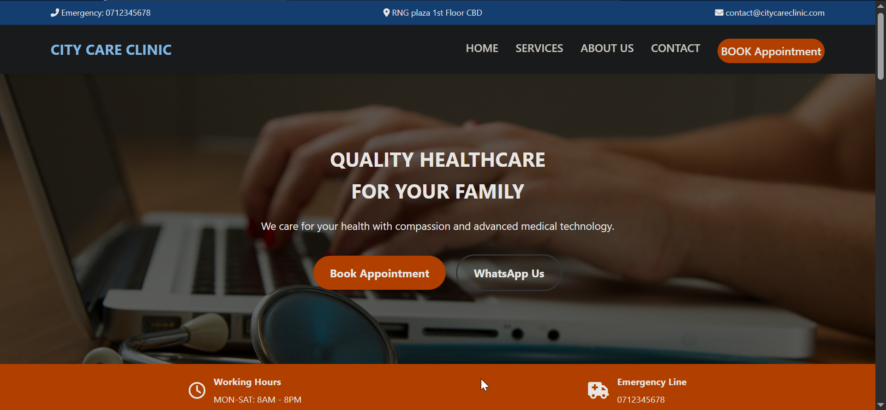

Modern Healthcare platform with seamless appointment booking system

citycare Healthcare Services is a fully functional healthcare platform designed specifically for the Kenyan market. The platform allows patients to book appointments, view medical records, and communicate with healthcare providers. The system automatically generates appointment confirmations and sends SMS notifications.
Built with modern web technologies, the website is mobile-responsive and optimized for fast loading on Kenyan 3G/4G networks. The admin dashboard provides real-time appointment management, patient tracking, and reporting.
4 weeks
citycare clinic, Nairobi CBD
✅ 40% increase in online appointments
✅ 20+ monthly active users
✅ Positive feedback from patients and staff